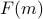
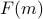
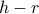

Interactive demos
Symmetry Breaking in the Landau Free Energy
One of the coolest things we discovered in the mean-field Ising model is how the magnetization suddenly becomes non-zero once we cool the system below its critical temperature  . In this applet, you'll visualize this behavior firsthand.
. In this applet, you'll visualize this behavior firsthand.
As we learned in our lesson about probe fields, the equilibrium magnetization is the value of  that minimizes the Landau free energy . And since is so small near the critical point, we can do a Taylor expansion of about
that minimizes the Landau free energy . And since is so small near the critical point, we can do a Taylor expansion of about  and just keep the first few terms. Here, I've kept the quadratic and quartic terms.
and just keep the first few terms. Here, I've kept the quadratic and quartic terms.
As we vary the temperature, the shape of will change, because the coefficients in front of each of the terms will change. Above the critical temperature , when the coefficient of the term is positive, there is a unique minimum at , meaning that the magnet is disordered and the spins are pointing any which way. However, once we've cooled the system below , the coefficient of the term becomes negative, and we find minima at  . The spins begin to align, and the system develops a spontaneous magnetization even though there's no external field! We say that spin-flip-symmetry has been broken in the ordered low-temperature phase.
. The spins begin to align, and the system develops a spontaneous magnetization even though there's no external field! We say that spin-flip-symmetry has been broken in the ordered low-temperature phase.
Try it out yourself below. On the left panel, I've plotted as a function of , and I've labeled the minimum value . On the right panel, I show how varies as you drag around the temperature.
Turning on the External Field
This applet demonstrates the phase diagram in the  plane! Wow! Smells like part of our homework for this week ;)
On the left panel, I've plotted the free energy as a function of the magnetization , and I've labeled the equilibrium value of magnetization as . On the right panel, you can adjust the values of the external field  and the parameter , which you can think about as the temperature. Note that this panel has been flipped 90 degrees compared to the previous applet!
and the parameter , which you can think about as the temperature. Note that this panel has been flipped 90 degrees compared to the previous applet!
Here are a few pointers to wrap your head around the plane
Left means applying an external field in one direction, right means applying the field in another.
Up means hotter, down means colder.
The origin at corresponds to the critical point. The lower half is below the critical point, the upper half is above the critical point.
Try dragging the ball around the plane in various paths. See if you can answer the following questions!
Can you find a place in the plane where the equilibrium magnetization suddenly jumps discontinuously as you drag the ball around?
This discontinuous jump is known as a first-order phase transition.
There's a line of first-order phase transitions hiding somewhere in this phase diagram, where jumps discontinuously as you cross over it. Can you find the line?
Sometimes, there's two minima in the free energy, and sometimes, there's only one.
Can you draw out these two regions on the phase diagram?
What's the mathematical expression for the ‘‘spinodal curve’’ separating these two regions?